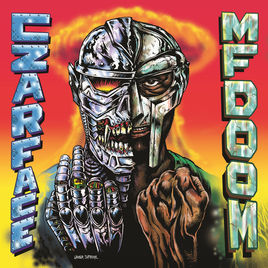
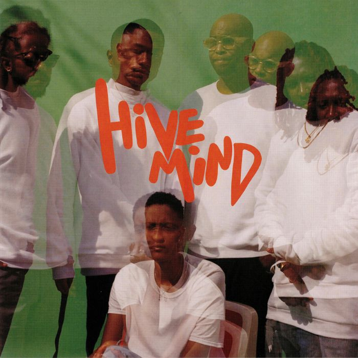
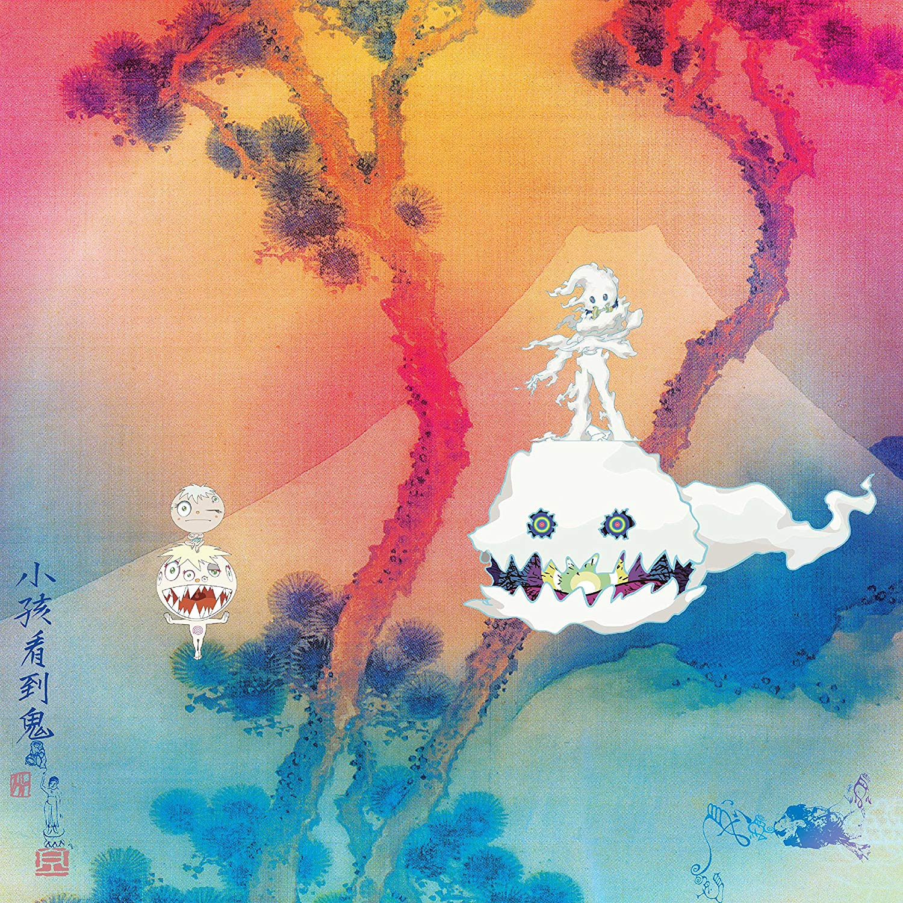
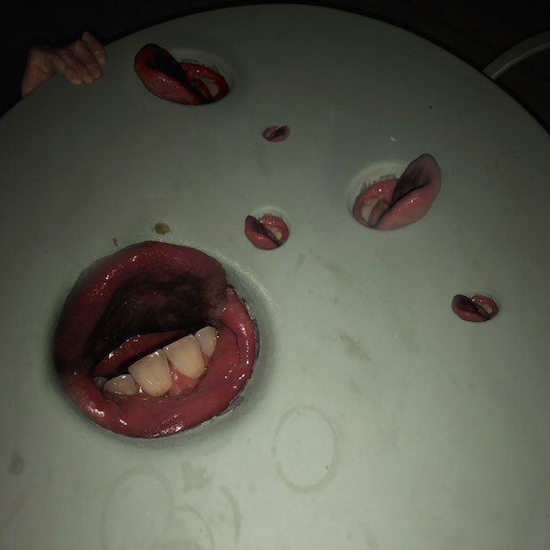

Hei mitt navn er Matias og jeg studerer Informasjonsteknologi på Høgskulen på Vestlandet (HVL) campus Kronstad. Igjennom dette prosjektet skal vi lage et nettsted som legger fokus på anbefaling av musikk, med det tenker vi det er viktig å prøve ut relevante HTML, CSS, og Javaskript verktøy for å få dette til. Under ligger noen anbefalinger til album fra dette året (2018), en liten beskrivelse og Spotify linker.
| MF DOOM & CZARFACE - Czarface meets Metalface  | Om albumet: MF Doom og Czarface slår sammen et album som igjen legger vekt på superskurk-imaget til MF Doom og Czarface, med historier som på sangen Phantoms bringer fram det surrealistiske i en blanding av østkysten av USA's hardbankede rapstil har gruppen Czarface virkelig dyttet denne unike subsjangeren fram. Anbefalt sang: Phantoms |
| The Internet - Hive Mind  | Om albumet: The Internet i Hive Mind en presentasjon av R&B blandet med en Soul-inspirert lyd. Albumet har en underholdende flyt som fremheves i instrumentale biter. Anbefalt sang: Stay the Night |
| Kids See Ghosts - KIDS SEE GHOSTS  | Om albumet: Kids See Ghosts er det nye prosjektet til artistene Kanye West og Kid Cudi.På Kids See Ghosts ser vi en interessant kombinasjon av skranglende trommer, forvrengede basslinjer og skrikende vokaler som allikevel skaper musikalsk harmoni. Anbefalt sang: 4th Dimension |
| Death Grips - Year of the Snitch  | Om albumet: Death Grips slår tilbake med enda et unikt musikalskt verk. Death Grips er den gruppen som dytter grensen mellom hip hop, instrumenter som først høres ut som hvit støy gir deg etter hver lytteøkt en dypere forståelse av lyrikken og struktur i det instrumentale. Year Of The Snitch gir oss i denne omgangen et album med økt tempo og større bruk av lydklipp fra rockesjangeren. Anbefalt sang: Hahaha |